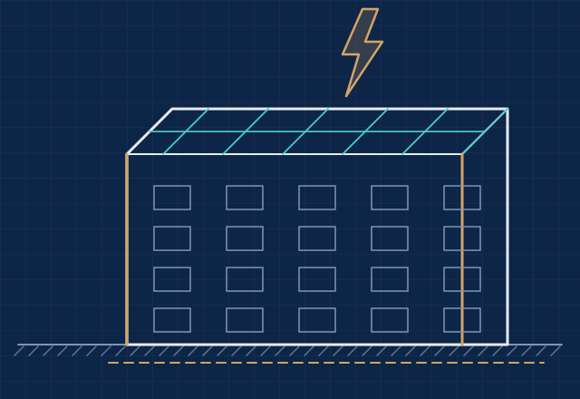

Faraday Kafesi Hesaplama ve Keşif
Çatınızın boyunu, enini, bina yüksekliğini ve konumunu girin; TS EN 62305-3'e göre Faraday kafesi için gereken iletken metrajını, iniş iletkeni ve klemens adetlerini hesaplayalım, yerleşimi çizelim. Fiyatlandırma keşif sonrası yapılır.

Aktif paratoner periyodik kontrolden neden geçmiyor?
Aktif (erken akış emisyonlu, ESE) paratoner başlıkları, yürürlükteki yıldırımdan korunma standardı TS EN 62305 serisinde tanımlı değildir. Yıldırımdan korunma tesisatının yıllık periyodik kontrolü TS EN 62305-3'e göre yapıldığı için, yalnızca aktif paratonere dayanan sistemler kontrolde standarda uygun kabul edilmez. Eski TS 622 standardının yürürlükten kalkmasıyla birlikte işletmeler bu sistemleri standartta tanımlı ağ (göz) yöntemiyle, yani Faraday kafesiyle yeniliyor.
Tahmini malzeme listesi
Bu liste yaklaşık ve tamamen tahminidir, bağlayıcı değildir. Çatı tipi, çatı üstündeki cihazlar ve bacalar, cephe yapısı ve zemin koşulları miktarları değiştirir. Kesin metraj keşifte çıkarılır.
Aktif paratoner yerine Faraday kafesi
TS EN 62305-3, yakalama sistemi olarak üç yöntem tanımlar: yakalama çubukları, gergin teller ve ağ (göz) iletkenleri. Aktif paratoner başlıkları bu yöntemler arasında yer almaz. Uluslararası Elektroteknik Komisyonu (IEC) da Elektrik Mühendisleri Odası'nın sorusu üzerine aktif paratonerlerin 62305 yıldırımdan korunma standardında yer almadığını bildirmiştir.
Bu nedenle aktif paratonerli binalarda yıllık paratoner ölçümü ve kontrolü yapıldığında tesisat standarda uygun bulunmaz ve uygunsuzluk giderilene kadar rapor olumlu verilemez. Düz ve geniş çatılı fabrika, depo ve iş yerlerinde en yaygın çözüm Faraday kafesidir; mevcut iniş iletkenleri ve topraklama uygunsa yeni sisteme dahil edilebilir.
Faraday kafesi nasıl hesaplanır?
Faraday kafesi, standartta ağ (göz) yöntemi olarak geçer. Çatı yüzeyi iletkenlerle belirli aralıklarla kare gözlere bölünür, bu ağ bina çevresine dağıtılmış iniş iletkenleriyle topraklama sistemine bağlanır. Hesap aracı şu adımları uygular:
- Göz aralığı: Seçilen koruma sınıfına göre en büyük göz ölçüsü alınır ve çatı her iki yönde bu ölçüyü aşmayacak şekilde eşit aralıklarla bölünür. Çatı kenarları da ağın parçasıdır.
- İniş iletkenleri: Her cephe, sınıfa göre tipik iniş iletkeni mesafesini aşmayacak şekilde bölünür; köşelerde mutlaka iniş iletkeni bulunur. İniş uzunluğu bina yüksekliğine göre hesaplanır.
- Topraklama: Yeni topraklama seçildiğinde binanın yaklaşık 1 m dışından ve en az 0,5 m derinlikten geçen halka topraklama (B tipi) uzunluğu hesaplanır.
- Yardımcı elemanlar: Her iniş iletkeninde bir test (ayırma) klemensi, iletkenler için yaklaşık 1 m aralıkla tutucu, kesişim noktalarında bağlantı klemensi ve çatı kenarında en fazla 10 m aralıkla kısa yakalama uçları öngörülür.
| Koruma sınıfı | Göz aralığı | İniş iletkenleri arası | Yuvarlanan küre yarıçapı |
|---|---|---|---|
| I | 5 x 5 m | 10 m | 20 m |
| II | 10 x 10 m | 10 m | 30 m |
| III | 15 x 15 m | 15 m | 45 m |
| IV | 20 x 20 m | 20 m | 60 m |
Çatı iletkenleri ve iniş iletkenleri için en az 50 mm² kesitli iletken kullanılır; Ø8 mm sıcak daldırma galvaniz çelik veya bakır yuvarlak iletken bu şartı sağlar.
Faraday kafesi kurulumu nasıl ilerler?
- Ön hesap: Bu sayfadaki araçla çatınız için tahmini malzeme listesini görürsünüz.
- Keşif: Çatı, cepheler, mevcut paratoner ve topraklama tesisatı yerinde incelenir. İstanbul içi keşif ücreti 500 € + KDV'dir.
- Proje ve teklif: TS EN 62305-2 risk analizi yapılır, koruma sınıfı belirlenir; kesin metraj ve fiyat teklifi iletilir. Yıldırımdan Korunma Tesisatı Projesi EMO kayıtlı S.M.M. elektrik mühendisi tarafından imzalanır.
- Kurulum: Çatı ağı, iniş iletkenleri, test klemensleri ve topraklama projeye göre yapılır.
- Ölçüm ve rapor: Kurulum sonrası topraklama ve süreklilik ölçümleri yapılır, yıldırımdan korunma tesisatı raporlanır.
Sık sorulanlar
Faraday kafesi nedir?
Faraday kafesi, binanın çatısını belirli aralıklarla iletken bir ağ ile kaplayan, bu ağı iniş iletkenleriyle topraklama sistemine bağlayan yıldırımdan korunma yöntemidir. TS EN 62305-3'te ağ (göz) yöntemi olarak geçer ve özellikle düz ve geniş çatılarda kullanılır.
Aktif paratoner periyodik kontrolden geçer mi?
Aktif (erken akış emisyonlu, ESE) paratoner başlıkları TS EN 62305 serisinde tanımlı değildir. Yıldırımdan korunma tesisatının periyodik kontrolü TS EN 62305-3'e göre yapıldığından, yalnızca aktif paratonere dayanan sistemler kontrolde standarda uygun kabul edilmez. Tesisatın standartta tanımlı yöntemlerden biriyle, çoğunlukla Faraday kafesiyle yenilenmesi gerekir.
Göz aralığı neye göre seçilir?
TS EN 62305-3, koruma sınıfına göre en büyük göz aralığını verir: I. sınıf 5 x 5 m, II. sınıf 10 x 10 m, III. sınıf 15 x 15 m, IV. sınıf 20 x 20 m. Hangi sınıfın gerektiği TS EN 62305-2'ye göre yapılan risk analiziyle belirlenir.
İniş iletkeni kaç tane olmalı?
Standart, iniş iletkenleri arasındaki tipik mesafeyi I ve II. sınıfta 10 m, III. sınıfta 15 m, IV. sınıfta 20 m olarak verir. İniş iletkenleri bina çevresine eşit dağıtılır ve mümkün olduğunca köşelere yerleştirilir; en az iki iniş iletkeni bulunmalıdır.
Hesaplama aracı fiyat veriyor mu?
Hayır. Araç yalnızca girdiğiniz ölçülere göre tahmini malzeme miktarlarını gösterir. Sonuçlar yaklaşık ve tamamen tahminidir, bağlayıcı değildir. Fiyatlandırma keşif sonrası yapılır.
Faraday kafesi keşif ücreti ne kadar?
İstanbul içindeki tesisler için keşif ücreti 500 € + KDV'dir. İstanbul dışındaki tesisler için keşif ücreti mesafeye göre ayrıca bildirilir. Keşif sonrası kesin metraj ve fiyat teklifi iletilir.
Keşifte neler incelenir?
Çatının ölçüleri ve kaplaması, çatı üstündeki cihazlar, bacalar ve direkler, iniş iletkenlerinin cephedeki güzergâhı, mevcut paratoner ve topraklama tesisatı yerinde incelenir.
Faraday kafesi ile paratoner arasındaki fark nedir?
Paratoner (yakalama çubuğu) korunacak alanı bir veya birkaç noktadan korur. Faraday kafesi ise çatı yüzeyini iletken bir ağ ile kaplar ve yıldırım akımını çok sayıda iniş iletkeniyle toprağa dağıtır. Hangi yöntemin uygun olduğu binanın geometrisine ve risk analizine göre belirlenir.
Aymati Proje olarak Faraday kafesi keşfini, Yıldırımdan Korunma Tesisatı Projesini ve kurulum sonrası ölçüm ve raporlamayı İstanbul genelinde yapıyoruz.